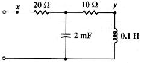

B02 AC analysis: Input impedance at given frequency
Question. Given the following circuit, find Z between the two white nodes at a frequency of 100 rad/s.

Solution:
There are different ways to solve this problem using Symbulator. I'll present here the easiest way, using one of the latest tools of Symbulator: thevenin(). This tool will provide us with the Zth, which is the input impedance of the circuit.
Label nodes and elements. Define a variable containing circuit description. I used this description:
"r20,x,2,20; r10,2,y,10; cx2,2,0,2/1000; l01,y,0,1/10"à cir
Run the Thevenin/Norton tool:
sq\thevenin(cir,x,0)
Done
When asked, select AC (alternating current) analysis, and input 100 as frequency.
Ask for the input impedance.
zth
22-6*i
Answer: The answer Symbulator gives is the right one...